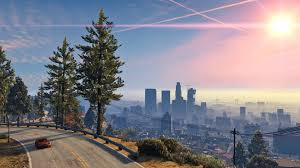
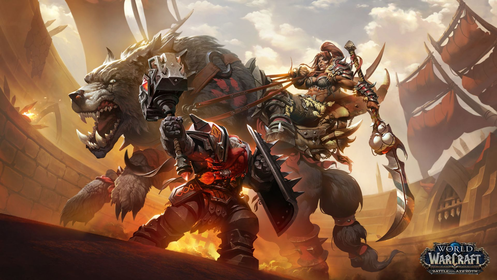
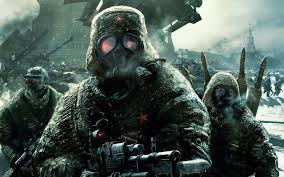

26 de Octubre 2004
Paisajismos GTA V
Es una serie de videojuegos creada por David Jones y por los hermanos Sam y Dan Houser. Originalmente fue desarrollada por la compañía escocesa DMA Design, que posteriormente pasó a llamarse Rockstar North, de la empresa Rockstar Games. Grand Theft Auto cuenta la historia de distintos criminales y aunque sean varios, por una razón se van relacionando problemas a más personajes conforme va pasando el tiempo. Generalmente los protagonistas son antihéroes. Es considerado un juego alto en violencia, por lo que es recomendado solo para mayores de edad.
Leer Mas..

9 de Septiembre 1994
Warcraft
Warcraft es una marca comercial de Blizzard Entertainment que ha sido ampliamente difundida y diversificada a partir del videojuego Warcraft: Orcs & Humans (1994), uno de los primeros en su género. Por extensión también implica a la marca World of Warcraft, que nace del videojuego de rol multijugador masivo en línea -por sus siglas en inglés, MMORPG- del mismo nombre.1El universo de Warcraft que se encuentra en ambas marcas está ambientado en una fantasía épica moderna propia de El Señor de los Anillos o Dungeons & Dragons.
Leer Mas..

22 de Septiembre 2016
Call of Dutty
Es una serie de videojuegos de disparos en primera persona, de estilo bélico, creada por Ben Chichoski, desarrollada principal e inicialmente por Infinity Ward, Treyarch, Sledgehammer Games , llegando así a lanzar varios juegos derivados de forma paulatina con la serie principal. La serie inicialmente se ambientaba en la Segunda Guerra Mundial, relatando personajes y combates acaecidos durante dicho conflicto bélico Esto fue cambiando hasta la actualidad, donde los argumentos suceden en ambientes contemporáneos y ficticios
Leer Mas..

26 de Octubre 2018
Red Dead Redemption II
Es un videojuego de acción-aventura western, en un mundo abierto y en perspectiva de primera y tercera persona,1 con componentes para un jugador y multijugador.2 Fue desarrollado por Rockstar Games. Al igual que la primera entrega, Red Dead Redemption 2 es un juego de acción y aventura, jugado tanto como primera como tercera persona, ambientado en el lejano oeste estadounidense y desarrollado en un entorno de mundo abierto con una versión ficticia del oeste, el medio oeste y el sur de los Estados Unidos en 1899,durante la segunda mitad de la era del Salvaje Oeste y el final de la era, a comienzos del siglo XX
Leer Mas..